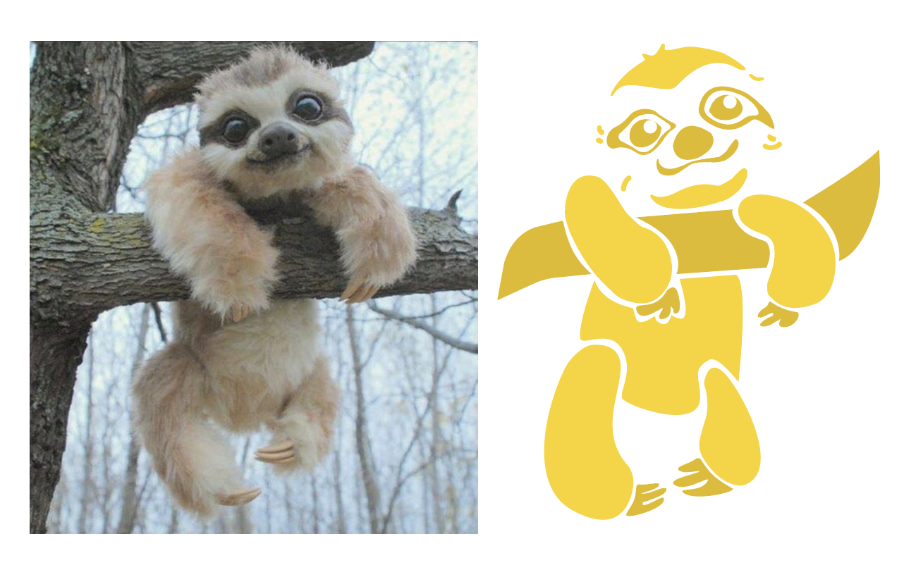

My Spiritual Animal
Brief
Goal
A strong logo conveys the essence and vision of a brand in a powerful, compact way. The goal of this design was to design a personal logo for myself based on my own spiritual animal.
Category
Logo Design
Tool
Illustrator, Photoshop
My Animal Choice
Sloths seem to move so nonchalantly that you barely notice their presence. Taking their time is part of the Sloth's DNA, as is apparently hanging from tree branches. For me, I feel that sloths, in many ways, represent my own personality a lot. Sloths, with seemingly lumber movements, gradually learn how to make the most of even bad situations without any ruckus. Similar to them, I myself is a relatively "slow-thinker" but I can use the time to be flexible and adapt an optimal solution for problems I encounter.
Photographic Abstraction
"Logolizing"
Idea
For my abstracted animal figure, I followed a very flattend and cartoonish style. Therefore, I kept this style in my logo design. Since it was a personal logo, I tried to incorporate my name into the logo by using the branch that the sloth was hanging on and the empty space.